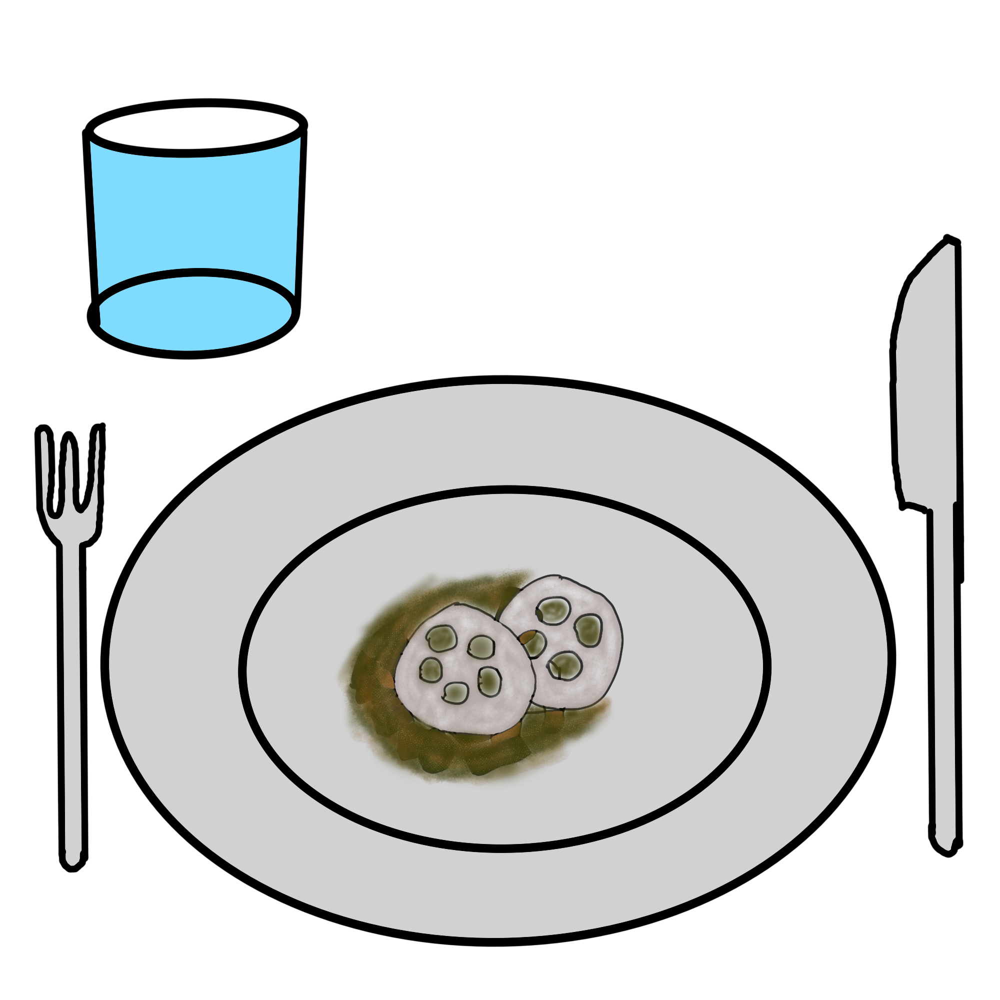

Japanischer Eintopf mit Auberginen

Beschreibung
Vorbereitung: 15 Tag
Kochen: 15 Minuten
Portionen: 2
Zutaten
- 600 Gramm Auberginen
- 250 Gramm Lotus
- 200 Gramm Tofu
- 150 Gramm Shimeji Pilze alternativ frische Shiitake
- 350 Milliliter Wasser heiß
- 1 Stange Lauch
- 1 Esslöffel Misopaste hell
- 4 Esslöffel Mirin
- 4 Esslöffel Tamari Tamari ist glutenfreie Sojasauce
- 5 Zentimeter Ingwer
- 3 große Schalotten
- 4 mittlere Knoblauchzehen
- Reismehl
- Reis (optional) als Beilage
Anleitung
-
Die Auberginen waschen, den Strunk entfernen und in ca. 2 cm lange Stücke schneiden.
Den Lauch ebenfalls und vor allem in den Zwischenräumen waschen, den Wurzelansatz und das etwas harte Ende entfernen.
Grob in 5 mm lange Stücke schneiden. Die Schalotten schälen und fein hacken.
- Knoblauch und Ingwer schälen und mit einer Reibe oder einem Mörser zu einer Paste verarbeiten.
Danach kurz zur Seite stellen.
-
Falls du Lotus als TK Ware gekauft habt, dann einfach auftauen lassen und in Scheiben schneiden.
Diese sollten ungefähr 5 mm oder weniger von der Dicke her sein. Falls du den Lotus als komplette Wurzel kaufst,
dann einfach wie eine Kartoffel schälen in Scheiben schneiden und später im Eintopf garen.
-
Die Wurzel von den Shimeji Pilzen abtreffen und die Pilze waschen. Dann zur Seite stellen.
-
Den Tofu in 1 cm große Würfel schneiden und von allen Seiten im Reismehl wenden.
Dabei gut andrücken und zur Seite stellen.
-
Reichlich Pflanzenöl in einer Pfanne erhitzen.
Den Tofu von allen Seiten goldbraun anbraten und anschließend in eine Schale für später geben.
-
Nimm einen großen Topf und erhitze hier 2-3 Esslöffel Pflanzenöl.
Als erstes kommen die Schalotten, der Lauch und die Auberginen mit in das Öl.
Brate alles für 4 Minuten an, damit das Gemüse ein wenig Farbe bekommt.
Gib jetzt die Misopaste, Ingwer, Knoblauch und die Pilze dazu. Alles gut vermengen und für 1-2 Minuten anbraten.
-
Gib jetzt die Lotusscheiben, Tamari und Mirin mit in den Topf.
Mit heißem Wasser auffüllen und gut vermengen. Alles für 8 Minuten bei mittlerer Hitze köcheln lassen.
Dann vorsichtig den frittierten Tofu unterheben und noch einmal für 1 Minute erhitzen.
-
Wenn es ganz schön sein soll, dann nimm jetzt noch pro Teller 2-3 sehr dünn geschnittene Lotusscheiben
und wende diese ebenfalls wie den Tofu in Reismehl.
Kurz in einer Pfanne knusprig ausbacken und im Anschluss als Deko und knusprige Einlage für den Eintopf verwenden.
-
Gib nun etwas von dem Eintopf in eine Schale und lege pro Schale 2-3 knusprige Lotusscheiben oben drauf.
Und nun kann serviert werden. Dazu passt weißer Reis sehr gut.
Zurück zur Homepage